HOME
ABOUT ME
LEARNINGS
ACTIVITIES
OVERVIEW
A1: Favorite application
A2: Persons
A3: Prototype
A4: Invitation Design
A5: Grid Design Problem
A6: Game day
A7: Personal website report
REFLECTION
OVERVIEW
R1: My first few weeks
R2: Intro to design thinking process
R3: Need Finding
R4: Information Architecture
R5: Visual Information Design
GUIDE QUESTIONS
OVERVIEW
G1: User Design
G2: What is design thinking
G3: What is prototyping
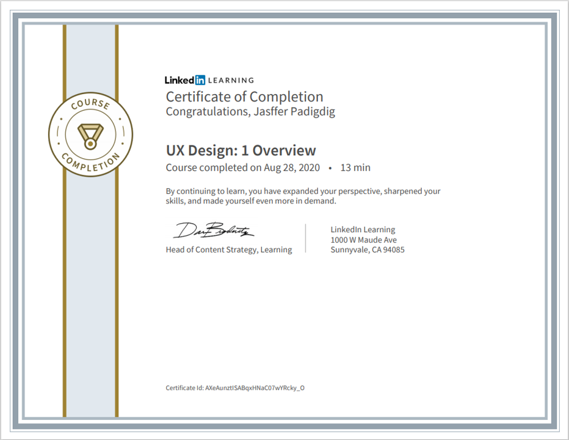
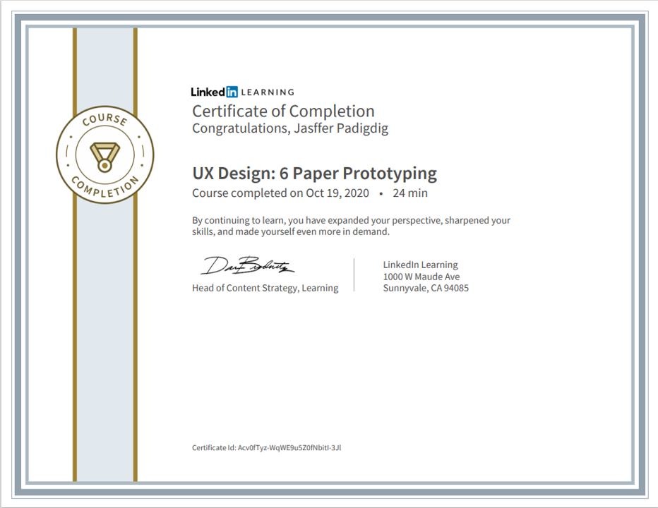
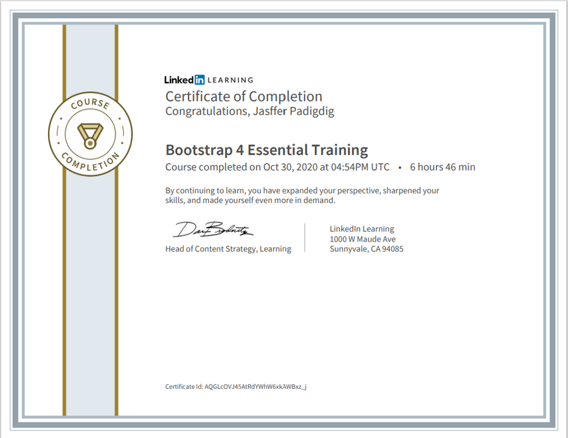
 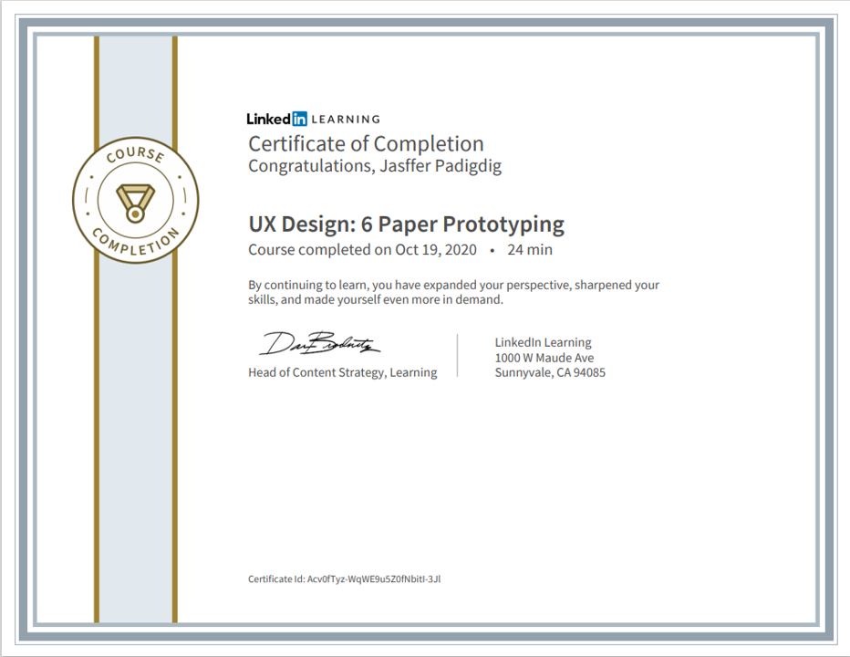
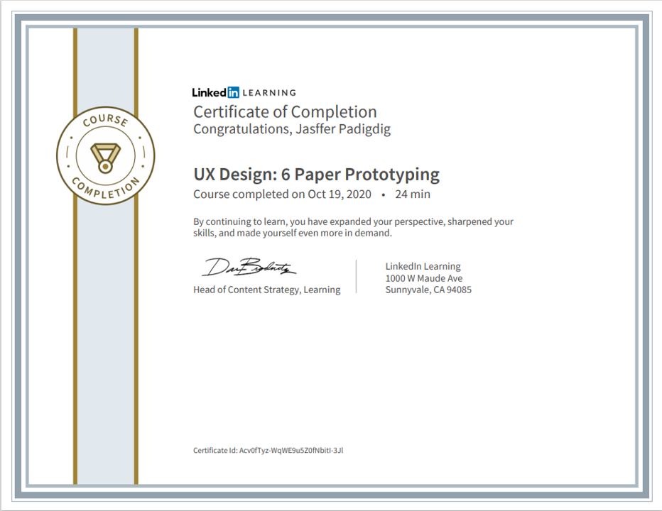
 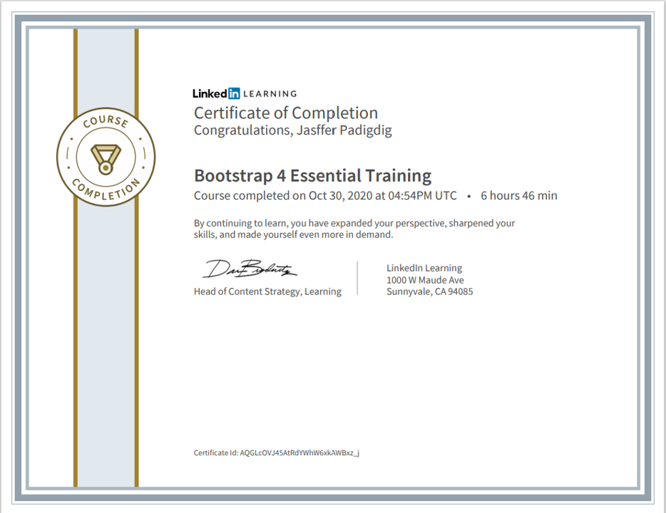
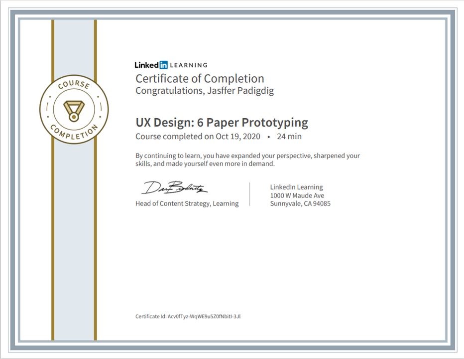
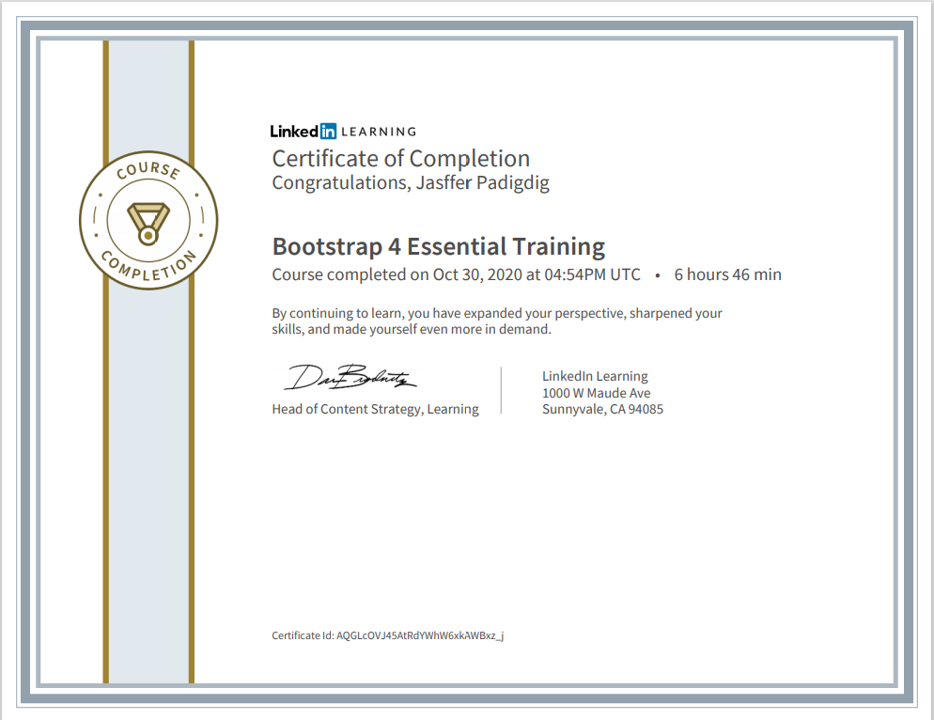
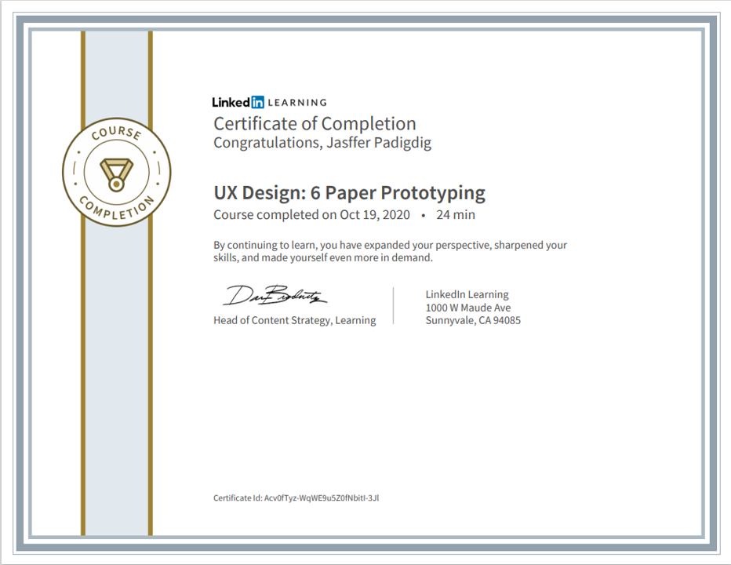
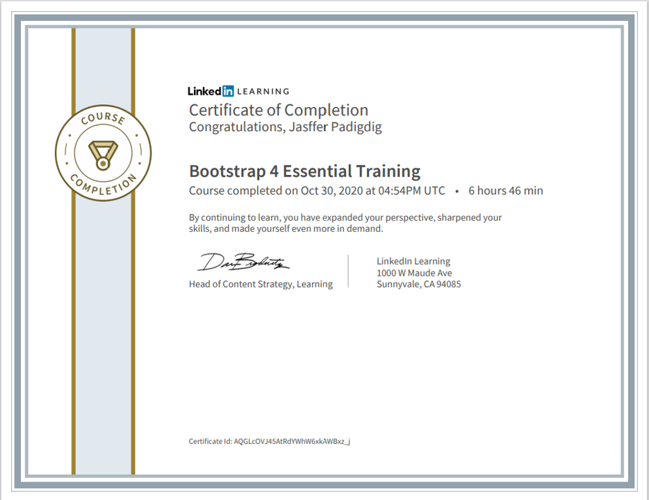
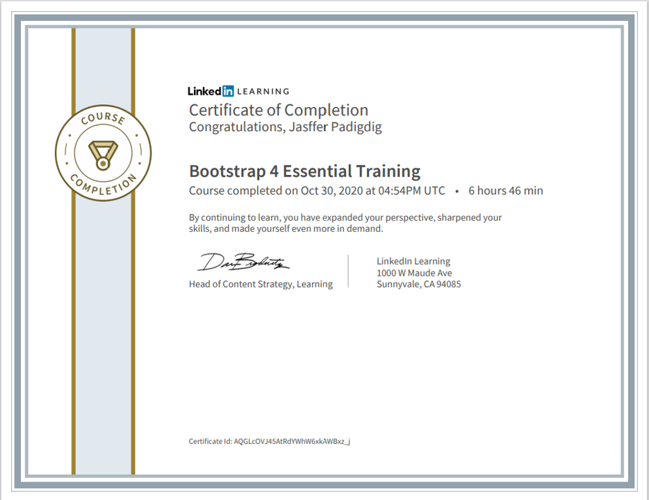
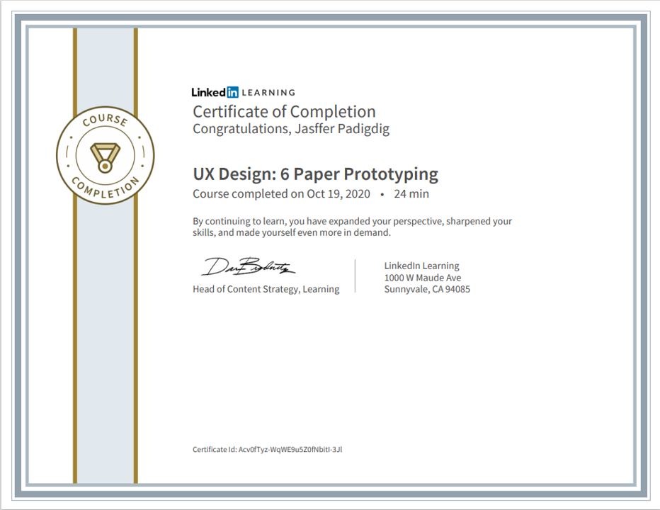
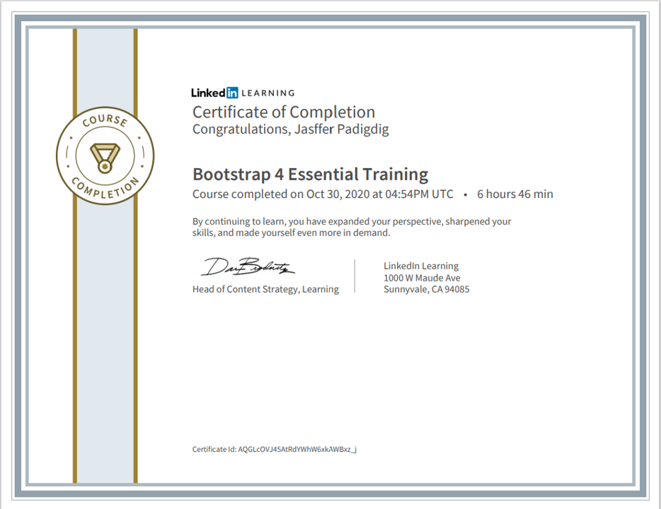
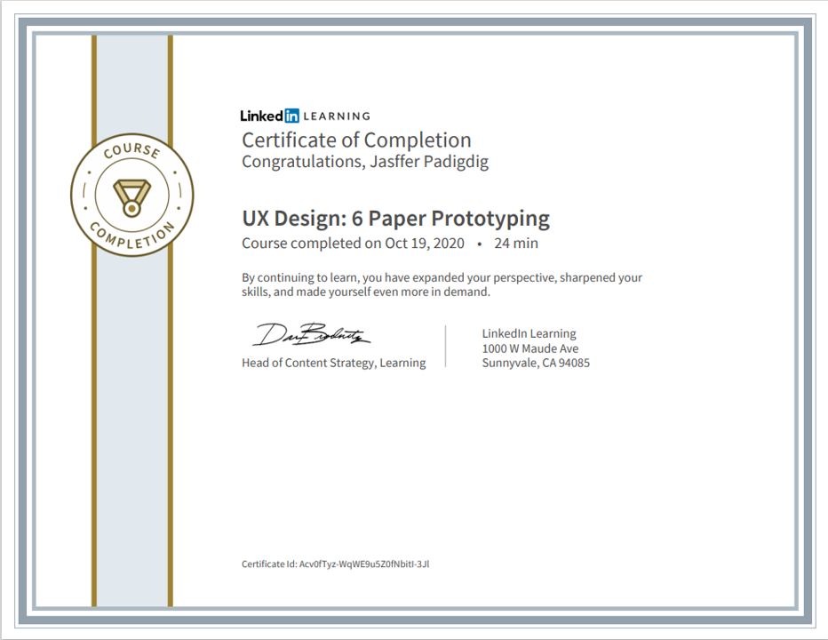
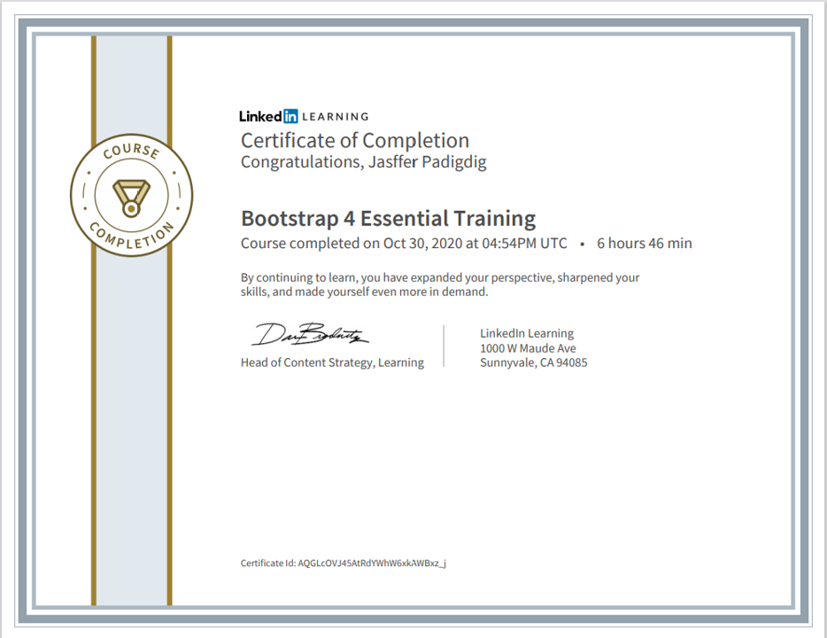